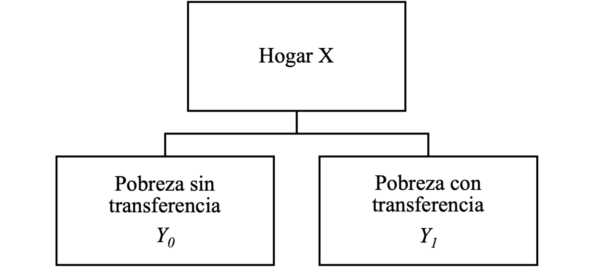
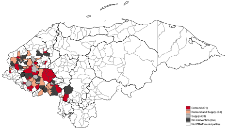
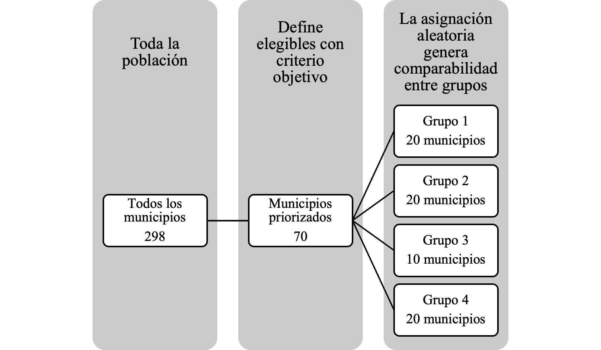
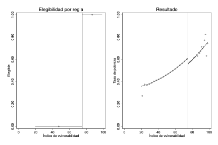
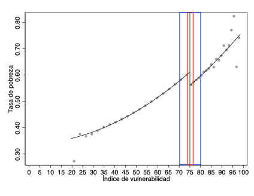

Guía y recomendaciones para la evaluación del impacto de programas y políticas públicas en Honduras
2026-03-11
Capítulo 1 Resumen
Este documento pretende ser una guía introductoria que resume buenas prácticas para evaluar el impacto de un programa o política pública. Determinar impacto no es lo mismo que hacer monitoreo y seguimiento, pues se debe responder la pregunta contrafactual: ¿qué hubiese pasado si no se hubiese implementado la medida que queremos evaluar? Esta guía explica este problema y las dificultades que genera en la práctica, presenta ejemplos rigurosos de evaluaciones de impacto y plantea recomendaciones metodológicas para evaluar el impacto de las reformas propuestas al sistema de protección social en documentos anteriores. Se espera que esta guía permita comprender el desafío para realizar evaluaciones de impacto y ofrecer soluciones para mejorar la medición cuantitativa de la efectividad de los programas y políticas públicas en Honduras.
Palabras clave: evaluación de impacto, problema contrafactual, métodos cuantitativos, experimentos aleatorios controlados, diseño de regresión discontinua, programas sociales, políticas públicas.
Capítulo 2 Introducción
La evidencia rigurosa es una herramienta valiosa para tomar decisiones sobre políticas públicas. En las últimas décadas, los países de América Latina y el Caribe han invertido amplios recursos en establecer sistemas de información para distintos fines; desde recolectar encuestas periódicas para observar tendencias en sus mercados laborales (encuestas de hogares), sistemas de información tributarios (registros impositivos de personas naturales y jurídicas) y bases de datos que permiten focalizar programas sociales a potenciales beneficiarios. Estos sistemas de información son un valor agregado para el monitoreo y seguimiento de las políticas públicas.
Si bien la existencia de esta información es esencial para fines de monitoreo y seguimiento, muchas veces son insuficientes para evaluar impacto, porque solamente captan cambios en el tiempo y correlaciones entre grupos. Para medir el impacto de un programa, se debe responder la siguiente pregunta: ¿qué resultados hubiéramos observado para un municipio, hogar, opersona que recibió un programa de no haberlo recibido? Esta pregunta se conoce como el problema contrafactual y es clave responderla para determinar el impacto de un programa o política pública.
Este documento busca esclarecer la diferencia entre monitoreo y seguimiento con la evaluación de impacto. En la siguiente sección se define y explica en detalle el problema contrafactual, con ejemplos de cuando el monitoreo y seguimiento lleva a conclusiones erróneas sobre la efectividad de un programa o política pública. La Sección 3 presenta ejemplos donde se resuelve el problema contrafactual mediante dos posibles metodologías: experimentos aleatorios controlados y aprovechando reglas que generan discontinuidades. Estas metodologías no son las únicas que permiten evaluar impacto, como discutiremos más adelante, pero son consideradas las mejores dos alternativas disponibles para resolver el problema contrafactual (Gertler et al., 2017). La Sección 4 repasa algunas de las propuestas realizadas para reformar el sistema de protección social en Honduras y sugiere metodologías para evaluar el impacto de transitar hacia un sistema de cobertura universal (Ham y Membreño, 2021; Ham, 2022). La última sección concluye y sugiere lecturas adicionales para aquellos interesados en profundizar los aspectos técnicos.
Capítulo 3 ¿Qué se necesita para evaluar el impacto de un programa o política pública?
Para evaluar el impacto de un programa o una política pública tenemos que presentar evidencia de que las diferencias en resultados entre beneficiarios y no beneficiarios, ya sea en un momento en el tiempo o a lo largo del tiempo, se deben únicamente a que los primeros fueron parte de dicha intervención y nada más.
A nivel individual, realizar este cálculo es virtualmente imposible. El procedimiento anterior requiere información que no tenemos ni es posible de obtener. Necesitaríamos observar a la misma persona en dos estados: sí recibe y no recibe el programa para responder a la pregunta contrafactual: ¿qué hubiese pasado si los beneficiarios no hubieran recibido el programa?
Figura 1. Resultados potenciales de recibir una transferencia monetaria

Fuente: Elaboración propia
Por ejemplo, si quisiéramos conocer el efecto sobre la pobreza de recibir transferencias monetarias, lo ideal sería comparar al mismo hogar cuando recibe y no recibe transferencias. Sin embargo, en un momento específico en el tiempo, solamente podemos observar al hogar como beneficiario o no beneficiario, no ambas, como muestra la Figura 1. Como no podemos observar al hogar en ambas situaciones, es imposible determinar el impacto de recibir el programa de transferencias monetarias sobre el hogar X, pues solo vemos sus ingresos con o sin programa.
Sin embargo, la cifra que interesa a un tomador de decisiones no es el efecto del programa para cada hogar individual, sino el efecto promedio para todos los hogares que reciben las transferencias monetarias (beneficiarios) comparado con todos los hogares que no la reciben (no beneficiarios). Esto sugiere que podríamos comparar tasas de pobreza para hogares beneficiarios y no beneficiarios utilizando datos recolectados por sistemas de monitoreo y seguimiento de indicadores sociales. Sin embargo, esta comparación no siempre permitirá estimar impacto, como mostramos mediante los ejemplos siguientes.
3.1 Comparar beneficiarios y no beneficiarios no siempre estima impacto
Para ilustrar esto, utilizaremos un ejemplo hipotético. Supongamos que tenemos información para todos los hogares en dos municipios del país: Orocuina y Apacilagua, que pertenecen al departamento de Choluteca. Todos los hogares en el primer municipio fueron beneficiarios de un programa de transferencias monetarias y los del segundo municipio no recibieron transferencias. ¿Podríamos medir pobreza en ambos municipios y decir que el impacto del programa es la diferencia observada entre Orocuina y Apacilagua?
La respuesta corta es no. Sin embargo, es clave entender el por qué. Si recolectamos datos para los hogares en ambos municipios, tenemos información en Orocuina para hogares que recibieron las transferencias y en Apacilagua para hogares que no recibieron la transferencia. Desconocemos qué hubiese pasado en ambos municipios de encontrarse en la situación opuesta. El Cuadro 1 muestra dos escenarios: uno hipotético donde tenemos información perfecta de los hogares en ambos municipios bajo ambos estados (cuando reciben y no reciben transferencias) y el observado, donde se recopila información con fines de monitoreo y seguimiento. El primer escenario es para mostrar que, si pudiéramos observar ambos escenarios para los hogares en cada municipio, encontraríamos que el programa reduce la tasa de pobreza. Esto ocurre porque la tasa de pobreza en Orocuina, donde se otorgan transferencias, cae en 1%. En Apacilagua, donde los hogares no reciben transferencias, la pobreza se mantiene sin cambios en un valor de 42%. Sin embargo, resaltamos que este primer escenario con información perfecta no ocurre, pues como describimos antes, es imposible ver al mismo municipio en dos estados diferentes a la vez.
Cuadro 1. Comparaciones erróneas: municipios beneficiarios y no beneficiarios
| Orocuina | Apacilagua | |
|---|---|---|
| 1. Información perfecta | ||
| Recibe transferencias | 40% | 42% |
| No recibe transferencias | 41% | 42% |
| Diferencia | -1% | 0% |
| 2. Información observada | ||
| Recibe transferencias | 40% | n.d. |
| No recibe transferencias | n.d. | 42% |
| Diferencia estimada | -2% | |
| (Orocuina-Apacilagua) |
Fuente: Elaboración propia
Notas: n.d.-No disponible porque no se observa.
El segundo escenario se asemeja más a la realidad que enfrentan los analistas. Solamente observamos la tasa de pobreza en Orocuina después que los hogares reciben las transferencias monetarias (40%) y la tasa de pobreza en Apacilagua tras no recibir transferencias (42%). Podríamos comparar las dos tasas de pobreza, y concluir que recibir transferencias reduce la pobreza en 2% a partir del cuadro. Sin embargo, dado como está construido el ejemplo, sabemos que el verdadero efecto es que el programa reduce la pobreza en 1%. Efectivamente estaríamos concluyendo de manera errónea que el programa es doblemente efectivo de lo que realmente es. Estas comparaciones erróneas pueden llevar a que se mantengan programas no efectivos en operación o, al contrario, eliminar programas que sí funcionan por errores de medición.
¿Por qué ocurre esto? Porque los beneficiarios y no beneficiarios de un programa suelen ser diferentes. Muchos programas suelen focalizarse a los lugares más necesitados, lo cual hace que las características de los hogares en Orocuina sean diferentes a los de Apacilagua. Es decir, al comparar estos municipios, suponemos que de no haberse entregado el programa en Orocuina, su tasa de pobreza habría sido igual que la de Apacilagua. Este punto de comparación no siempre es idóneo porque los municipios pueden diferir en muchas cosas además de que los hogares hayan o no recibido el programa de transferencias. Dicho cálculo suele hacerse frecuentemente en la práctica, dada la disponibilidad de datos de monitoreo y seguimiento. Sin embargo, la diferencia entre beneficiarios y no beneficiarios no suele capturar adecuadamente el impacto del programa.
3.2 Comparar beneficiarios y no beneficiarios antes y después del programa puede ser peor
Realizar comparaciones entre beneficiarios y no beneficiarios a través del tiempo también puede llevar a conclusiones erróneas sobre el impacto de un programa. Supongamos que tenemos las tasas de pobreza para los mismos dos municipios a través del tiempo. Una opción con estos datos sería comparar los resultados observados en el municipio donde se otorgaron transferencias (Orocuina) con el municipio donde no se dieron transferencias (Apacilagua) antes y después de que comenzara el programa. Esto lo hacemos en el Cuadro 2. Supongamos que el programa empezó en el 2020 y tenemos datos para un año antes (2019) y el primer año de implementación.
Cuadro 2. Comparaciones erróneas: municipios beneficiarios y no beneficiarios en el tiempo
| Antes | Después | Diferencia | ||
|---|---|---|---|---|
| Recibe transferencias | 2009 | 2010 | ||
| Orocuina | Si | 39% | 40% | 1% |
| Apacilagua | No | 35% | 42% | 7% |
| Diferencia | 4% | -2% | -6% |
Fuente: Elaboración propia
Aquí se puede utilizar una doble diferencia: primero calculamos las diferencias en el tiempo para cada municipio (última columna del Cuadro 2) y después restamos la diferencia en el tiempo del grupo beneficiario (Orocuina) y no beneficiario (Apacilagua). Esto nos daría un resultado que el programa bajo estudio reduce la pobreza en 6%. Del Cuadro 1, sabemos que el impacto real del programa es una reducción en pobreza del 1%. Si realizamos esta comparación entre municipios a lo largo del tiempo, nuevamente concluiríamos que el programa es más efectivo de lo que realmente es. Esto ocurre porque además de comparar dos municipios con atributos diferentes, introducimos un error adicional si hay factores que cambian en el tiempo y afectan al municipio beneficiario y no beneficiario de manera diferente. En este caso, sabemos que entre el 2019 y 2020 ocurrieron: la pandemia, los huracanes Eta e Iota, y otros eventos que pudieron afectar la tasa de pobreza. De hecho, el Cuadro 2 muestra que entre el 2019 y 2020, la pobreza aumento más en Apacilagua que en Orocuina. Al hacer esta comparación suponemos dos cosas que no se cumplen: i) que Orocuina y Apacilagua son parecidos salvo que en uno se dieron transferencias y en el otro no; y ii) que entre el 2019 y el 2020 lo único que cambió fue que se implementó el programa de transferencias.
Estos dos ejemplos muestran que usar los datos recolectados por sistemas de monitoreo y seguimiento no siempre permiten estimar el impacto de un programa. Para determinar efectos causales, necesitamos comparar grupos iguales y que no ocurran otros eventos en el tiempo que generen errores de medición o sesgos. Lograr estos dos objetivos es difícil sin tener un buen contrafactual. La solución al problema contrafactual requiere encontrar un buen grupo de comparación para los beneficiarios, que sea virtualmente idéntico en todos los aspectos salvo que uno recibe el programa y el otro no. Además, si vamos a medir consecuencias a lo largo del tiempo, se debe tomar en cuenta que puede haber factores como el ciclo económico, desastres naturales y otros eventos inesperados que pueden afectar si podemos calcular el impacto de un programa.
Es importante resaltar que a pesar de que el monitoreo y seguimiento de indicadores no siempre permite estimar el impacto de un programa, sigue siendo un componente esencial en el ciclo de políticas públicas. Estas cifras proveen información valiosa sobre la implementación y permite determinar si se están cumpliendo las metas del programa bajo estudio. Por lo tanto, no se recomienda que se eliminen dichos sistemas por priorizar las evaluaciones de impacto. Al contrario, ambas cosas pueden trabajar de manera conjunta si se planifica con anticipación o se utiliza ingenio para combinar datos de monitoreo y seguimiento con una evaluación de impacto, ya sea desde el diseño del programa o retrospectiva tras la implementación de este.
Resumimos los principales puntos discutidos en esta sección a continuación:
- Comparar a beneficiarios y no beneficiarios no siempre permite estimar el impacto de un programa o política pública**, ya sea en un momento especifico después del programa o a lo largo del tiempo porque usualmente compara poblaciones diferentes cuyos resultados son afectados por diferentes eventos a lo largo del tiempo;
- Para estimar el impacto de un programa, debemos definir un buen contrafactual: un grupo de comparación cuya única diferencia con los beneficiarios es que no reciben el programa;
- El monitoreo y seguimiento de indicadores es esencial, pero insuficiente para determinar impacto. Sin embargo, ambos enfoques son complementarios y valiosos.
En la siguiente sección, mostraremos ejemplos donde se resuelve el problema contrafactual. El primero es una experiencia en Honduras: la segunda fase del Programa de Asignación Familiar (PRAF-II). La evaluación de este programa fue realizada mediante un experimento aleatorio controlado* y es un modelo por seguir en términos de generar evidencia rigurosa sobre la efectividad de los programas de transferencias monetarias. Adicionalmente, mostramos un ejemplo hipotético mediante simulación de otra forma de evaluar impacto que aprovecha el conocimiento de las reglas de asignación de un programa y la disponibilidad de datos recolectados por los sistemas de monitoreo y seguimiento actualmente disponibles para comparar a los beneficiarios y no beneficiarios alrededor de un umbral de elegibilidad, un método conocido como diseño de regresión discontinua. Como mencionamos anteriormente y detallaremos al final de la próxima sección, estas dos metodologías son consideradas como los “estándares de oro” en la evaluación de programas y políticas públicas, pero no son las únicas técnicas disponibles para determinar el impacto de estas. También es importante resaltar que, como cualquier método, tienen ventajas y desventajas prácticas que discutiremos para cada uno de ellos.
Capítulo 4 Ejemplos de evaluaciones de impacto rigurosas
4.1 Experimentos aleatorios controlados
El Programa de Asignación Familiar (PRAF) comenzó en la década de 1990 para proteger a la población hondureña vulnerable ante los efectos de los ajustes macroeconómicos (Galiani y McEwan, 2013). A lo largo del tiempo, el PRAF fue evolucionando. En 1998, siguiendo el ejemplo de otros programas en América Latina, principalmente Progresa en México, se rediseñó el PRAF para ser un programa de transferencias monetarias condicionadas (Stampini y Tornarolli, 2012).
Los programas de transferencias monetarias condicionadas entregan subsidios monetarios a hogares vulnerables que cumplen mínimas condiciones de asistencia escolar y visitas médicas de los niños y mujeres que pertenecen a esos hogares. Sus objetivos son aliviar la pobreza actual mediante transferencias monetarias y sentar las bases para la erradicación de la pobreza en el largo plazo mediante inversiones en capital humano (Levy, 2007). Sin embargo, para los propósitos de esta guía, su atributo más importante es que suelen ser programas donde se prioriza su evaluación de impacto. Por lo tanto, desde la etapa de diseño, buscan definir un buen contrafactual para el grupo beneficiado que no sufre de los problemas que describimos anteriormente. Es decir, define grupos que son casi idénticos, salvo que un grupo recibe el programa y el otro no. ¿Cómo lo hacen?
Muchos de los programas de transferencias monetarias condicionadas en América Latina, incluyendo el rediseñado PRAF en Honduras, fueron realizados como experimentos aleatorios controlados. Este procedimiento consiste en dos pasos: i) focalizar a los municipios elegibles entre la población total y ii) seleccionar quienes reciben el programa de esos municipios elegibles mediante una lotería.
Para el primer paso, en PRAF se priorizaron municipios utilizando el puntaje de altura por edad para los niños en primer grado con datos de la Secretaría de Educación, ya que no existían mediciones de pobreza municipal en este momento (Galiani and McEwan, 2013). Este indicador mide rezagos en el crecimiento de los niños respecto a su edad, con valores negativos indicando un déficit respecto al promedio y valores positivos un crecimiento mayor al promedio. Por esta razón se consideró un aproximado de la pobreza municipal. Se fijó un punto de corte de -2.304, donde los municipios con menor puntaje que este umbral serían priorizados por ser considerados más vulnerables. Tras consideraciones logísticas, se focalizaron 70 de los 298 municipios como elegibles para recibir el programa. La ubicación de estos municipios se muestra en la Figura 2.
Figura 2. Ubicación de municipios en el programa PRAF

Fuente: Reproducido de Ham y Michelson (2018)
Tras esta priorización, se dividieron estos 70 municipios elegibles en 4 grupos seleccionados al azar mediante una lotería pública realizada el 13 de octubre de 1999 (IFPRI, 2000): i) 20 municipios donde se otorgarían transferencias monetarias a todos los hogares (G1); ii) 20 municipios donde todos los hogares recibirían transferencias y se harían inversiones en escuelas y centros médicos (G2); iii) 10 municipios donde se realizarían inversiones en escuelas y centros médicos (G3); y iv) 20 municipios que no recibirían nada durante dos años y después se incorporarían al PRAF una vez culminada la evaluación de impacto (G4). La Figura 3 muestra el flujo y los beneficios de realizar este procedimiento para evaluar impacto.
Figura 3. Definición de elegibilidad y asignación aleatoria de grupos

Fuente: Elaboración propia
Este diseño experimental tiene varias ventajas. Para los municipios elegibles, los más vulnerables según la priorización, los hogares en los cuatro grupos eran idénticos en sus atributos observables antes de que comenzara la implementación del programa. Esto lo podemos verificar con datos anteriores a la implementación del programa. En el caso de PRAF, se recolectaron encuestas a hogares en cada uno de los 70 municipios antes y después del programa (Glewwe y Olinto, 2004). Además, los datos del Censo de Población y Vivienda (CNPV) del 2001 fueron útiles ya que la también recolectan atributos sobre todos los hogares en los municipios priorizados.
El Cuadro 3 muestra resultados utilizando datos del CNPV 2001 en Galiani y McEwan (2013), uno de los estudios que evalúa los efectos del PRAF. Ellos realizan un análisis estadístico que compara si en promedio los cuatro grupos seleccionados al azar son iguales antes del programa. Como muestra el cuadro, las características promedio entre grupos son similares, lo cual sugiere que son casi idénticos a excepción de que algunos municipios recibieron transferencias. Adicionalmente, estas pruebas de balance sugieren que, si los grupos son iguales en características que podemos ver en los datos, también deberían ser iguales en atributos que no observamos.
Cuadro 3. Pruebas de balance entre grupos seleccionados aleatoriamente en PRAF
| Característica | Grupo 1 | Grupo 2 | Grupo 3 | Grupo 4 | Pr(Iguales) |
|---|---|---|---|---|---|
| Edad | 8.449 | 8.505 | 8.550 | 8.528 | 18.9% |
| Población femenina | 48.4% | 48.3% | 48.3% | 48.3% | 91.8% |
| Nació en el municipio | 93.4% | 90.5% | 92.9% | 93.3% | 58.1% |
| Tamaño del hogar | 7.516 | 7.434 | 7.354 | 7.238 | 15.3% |
| Municipios | 20 | 20 | 10 | 20 |
Fuente: Reproducción parcial del Cuadro 1 de Galiani y McEwan (2013)
Notas: El cuadro muestra los promedios municipales para cada grupo seleccionado al azar en el programa PRAF. La última columna muestra los resultados de una prueba de hipótesis que los cuatro promedios son iguales. Se acepta la hipótesis nula de igualdad si este porcentaje es mayor a 5%.
El diseño experimental del programa PRAF soluciona el problema contrafactual porque comparamos municipios que son estadísticamente iguales. Hay otras ventajas, pues podemos calcular el impacto del PRAF como las diferencias entre los resultados del grupo que no recibió nada con cada grupo para ver si las intervenciones tuvieron efectos distintos. Justamente esto hacen los estudios que evalúan este programa (Glewwe y Olinto, 2004; Galiani y McEwan; 2013). En el Cuadro 3 reproducimos resultados de Galiani y McEwan (2013) sobre asistencia escolar y trabajo infantil. En ellos podemos ver que comparado con municipios donde no se implementó el programa PRAF, aumentó la asistencia escolar para niños en edad escolar primaria (6-12 años) y redujo el porcentaje de niños dentro del mismo grupo etario que trabajaba en labores fuera de su hogar para todos los municipios en los grupos 1 y 2, pero no para aquellos en el grupo 3.
Cuadro 4. Impactos de corto plazo del programa PRAF en asistencia escolar y trabajo infantil
| Asistencia escolar | Trabajo infantil | |
|---|---|---|
| Grupo 1 | 8.3% | -2.4% |
| (2.8)*** | (1.7) | |
| Grupo 2 | 6.9% | -4.3% |
| (2.6)*** | (1.3)*** | |
| Grupo 3 | -1.1% | -1.0% |
| (4.3) | (2.1) | |
| Promedio Grupo 4 | 65.0% | 9.9% |
Fuente: Reproducción parcial del Cuadro 2 de Galiani y McEwan (2013)
Notas: El cuadro muestra las diferencias de resultados en asistencia escolar y trabajo infantil de los tres grupos experimentales (Grupos 1, 2 y 3) respecto al grupo que no recibió transferencias (Grupo 4).
Nivel de significancia: p<1%; p<5%; p<10%.
Estas estimaciones se pueden considerar como el impacto del PRAF sobre la asistencia escolar y el trabajo infantil porque el diseño experimental resolvió el problema contrafactual al primero priorizar los municipios elegibles y después seleccionar cuáles recibían el programa por lotería. El problema contrafactual se resuelve porque estamos seguros de comparar grupos cuya única diferencia es que los beneficiarios reciben el programa y los no beneficiarios no lo reciben. Además, pese a que 20 municipios no recibieron transferencias durante dos años, esta ventana de tiempo permitió evaluar el programa, y después los hogares en estos 20 municipios comenzaron a recibir transferencias monetarias, por lo cual no fueron excluidos de recibir beneficios por evaluar.
Resaltamos que el problema contrafactual se resuelve para los hogares en los 70 municipios priorizados (validez interna). Si quisiéramos generalizar los resultados a los 298 municipios (validez externa), no es posible porque el impacto estimado solo aplica para los municipios focalizados que se asignaron en grupos al azar. Es decir, los impactos del programa PRAF aplican solamente para los 70 municipios priorizados y vulnerables. Si el programa se escalara y se otorgaría en todo el país, quizás sus impactos podrían ser diferentes porque se incluirían municipios menos vulnerables. Este no es un punto menor, pues muestra que a veces se sacrifica generalidad de los resultados de la evaluación para poder resolver el problema contrafactual.
Esta metodología donde se escogen los beneficiarios al azar es considerada una de las mejores prácticas para evaluar el impacto de programas y políticas públicas. Si bien es necesario tener en cuenta varios aspectos técnicos para su implementación en la práctica (ver Gertler et al., 2017; para mayores detalles), es la forma más directa de solucionar el problema contrafactual. De hecho, el diseño implementado en 1998 ha sido utilizado por otros investigadores para evaluar los impactos de largo plazo del programa PRAF más de 20 años después (Ham y Michelson, 2018; Millán et al., 2020), por lo cual su uso permite no solamente estimar impacto en el corto plazo, sino también en el mediano y largo plazo en caso de ser diseñado correctamente.
El uso de experimentos aleatorios controlados para realizar una evaluación de impacto es una opción recomendada desde el punto de vista técnico porque genera evidencia rigurosa sobre los impactos de un programa o política, lo cual es una ventaja considerable, pero también presenta desafíos de implementación que determinan su viabilidad. Sus desventajas incluyen una necesidad de planificación minuciosa antes de implementar el programa, que incluye la focalización, la aleatorización e identificación de las necesidades de datos. Adicionalmente, los experimentos aleatorios controlados requieren un nivel de inversión alto de recursos monetarios, humanos y tiempo, pues se debe realizar un seguimiento cuidadoso a la implementación y recolección de información. Es importante resaltar que, las ventajas de poder evaluar impacto de manera rigurosa suelen superar los costos asociados a este método. Por esta razón se han implementado experimentos para evaluar programas de transferencias en todo el mundo (Stampini y Tornarolli, 2012; Millán et al., 2019). Esta metodología de evaluación de impacto se utiliza también para evaluar intervenciones en educación, salud, mercados laborales y otros aspectos de la vida donde es importante determinar si la inversión gubernamental y no gubernamental está siendo efectiva para lograr los objetivos establecidos.
4.2 Reglas discontinuas para estimar impacto con datos administrativos
Las reglas utilizadas para asignar programas pueden ayudar a resolver el problema contrafactual. Muchos países en América Latina y el Caribe seleccionan beneficiarios para programas con distintos fines utilizando un criterio objetivo, por ejemplo: un puntaje (Gertler et al., 2017). Este puntaje se calcula para todas las personas y luego se define un punto de corte que determina elegibilidad: quiénes reciben el programa y quiénes no. Comparar a las personas justo debajo y arriba del umbral permite evaluar el impacto de un programa mediante un diseño de regresión discontinua, siempre y cuando se cuente con un sistema de información que incluya datos demográficos y socioeconómicos para calcular el puntaje que se empleará para asignar los beneficios que se otorgaran en el marco del programa que se pretende evaluar.
Este sistema o base de datos de registro de beneficiarios podría ser, por ejemplo, el Registro de Participantes que contempla el Programa Red Solidaria ya que este registro recopilará información demográfica y socioeconómica de la población en pobreza y considerada vulnerable.
Debido a que la Red Solidaria contempla: i) la focalización de municipios y aldeas; ii) el levantamiento de un censo de hogares de aldeas focalizadas; iii) la selección y registro de beneficiarios; y iv) la verificación de beneficiarios y recopilación de documentos. Este Registro de Participantes se podría utilizar -como ya ha sido contemplado- tanto para la selección de beneficiarios calculando un índice de vulnerabilidad multidimensional (Pinilla-Roncancio, 2020; Pinilla-Roncancio y Ham, 2021), como en la etapa de evaluación de impacto, si este Registro también se propone recolectar datos después de la implementación de los programas escogidos.
A continuación, presentamos un ejemplo hipotético. Supongamos que tenemos la base de datos del Registro de Participantes (1 millón de hogares) y calculáramos un índice de vulnerabilidad multidimensional que va de 0 a 100 siguiendo las recomendaciones de Pinilla-Roncancio (2020), donde mayores valores indican mayor vulnerabilidad del hogar según el algoritmo seleccionado. Quisiéramos evaluar el efecto sobre la pobreza de un programa que brinda transferencias monetarias a los hogares con puntaje mayor a 75. Suponemos que el Registro de Participantes tiene información sobre todos los hogares en pobreza extrema, es decir, que no hay errores de exclusión de los hogares pobres antes de calcular el puntaje para asignar el programa.
La Figura 4 muestra cómo se pueden utilizar las reglas de asignación al programa si los datos administrativos permiten dar seguimiento a este programa. Si el Registro de Participantes se actualiza cada año, podríamos evaluar el impacto de este programa de transferencias monetarias. Si no se actualiza, se debe recolectar esa información para los hogares alrededor del umbral de 75 puntos o de ser viable, para todos los hogares en el Registro de Participantes. Suponemos para propósitos de esta guía que tenemos información actualizada de todos los hogares en el Registro de Participantes un año después de iniciar el programa que queremos evaluar.
Figura 4. Discontinuidades para evaluar el impacto de un programa de transferencias

Fuente: Elaboración propia con datos simulados.
Primero, se debe verificar que las reglas se cumplen. El panel de la izquierda, de este ejemplo hipotético, muestra que ningún hogar con un índice de vulnerabilidad menor a 75 recibe el programa, mientras todos aquellos con puntaje mayor a 75 sí son beneficiados. Esta grafica efectivamente dice que el programa escoge a los hogares “más vulnerables” dentro de los pobres.
El panel de la derecha muestra las tasas de pobreza tras implementar el programa. El gráfico muestra un salto o “discontinuidad” entre un hogar que tenía puntaje 74 y no recibió el programa comparado con un hogar con puntaje 76 que sí recibió el programa. Esta discontinuidad puede considerarse como el impacto del programa siendo evaluado, pues se cumplen dos cosas: i) la regla se cumple perfectamente (<75 no reciben y 75 si reciben), ii) el problema contrafactual se resuelve porque es factible que los hogares justo arriba (76) y abajo del umbral escogido (74) para asignar el programa sean similares en características observables y no observables.
Conocer y validar la regla es el primer requisito para implementar el diseño de regresión discontinua. El segundo requisito es tener disponibilidad de datos. La importancia del segundo requisito se muestra en la Figura 5, que muestra diferentes comparaciones del efecto sobre pobreza en el programa que estamos estudiando. Podríamos estimar el impacto del programa de transferencias sobre pobreza usando datos de todos los hogares en el Registro de Participantes o definir ventanas alrededor de ciertos puntajes del índice de vulnerabilidad multidimensional. Como mencionamos, es más factible que hogares con puntajes cercanos sean más parecidos entre sí, lo cual hace que definir la ventana de comparación sea una decisión fundamental. Para fines de esta guía, suponemos que nos interesa evaluar el impacto sobre pobreza solamente, pero se pueden definir múltiples indicadores de impacto en la práctica. Por ejemplo, se puede ver otros si otros indicadores de vulnerabilidad como la capacidad de recuperación o resiliencia. Todos los resultados escogidos se pueden definir en el marco lógico del programa y evaluar con este método.
Figura 5. Discontinuidades diferentes tienen distintos requisitos de datos

Fuente: Elaboración propia con datos simulados.
Consideramos tres ventanas: i) todos los hogares (puntajes de 0-100), ii) los hogares con puntajes entre 70 y 80, y iii) los hogares con puntajes entre 74 y 76. Los resultados de estimar el cambio en la tasa de pobreza para cada ventana se muestran en el Cuadro 5. En este caso, estimamos un efecto de reducción de la pobreza para cada ventana escogida. Sin embargo, este efecto es menor cuando consideramos a todos los hogares (reducción de 2.2 puntos porcentuales) y crece cuando acortamos la ventana entre 60 y 70 (caída de 4.0 puntos porcentuales) y es más grande cuando usamos hogares con puntajes entre 74 y 76 (reducción de 5.2 puntos porcentuales). Es decir, mientras más cerca al umbral definimos la ventana de comparación, más precisos serán los resultados porque los hogares se vuelven más parecidos entre sí (hay un mejor contrafactual).
Cuadro 5. Impactos de recibir transferencias sobre tasa de pobreza en la discontinuidad
| Todos los hogares | Entre 70 y 80 | Entre 74 y 76 | |
|---|---|---|---|
| Puntaje > 75 | -0.035 | -0.049 | -0.051 |
| (0.001)*** | (0.001)*** | (0.003)*** | |
| Tasa de pobreza año anterior | 0.511 | 0.587 | 0.588 |
| Observaciones | 1,000,000 | 80,051 | 13,607 |
Fuente: Elaboración propia con datos simulados
Notas: El cuadro muestra las diferencias entre hogares arriba del umbral de 75 (reciben transferencias) en el índice de vulnerabilidad multidimensional y los hogares con puntajes menores a 75 (no reciben transferencias) para distintas ventanas de comparación.
Nivel de significancia: p<1%; p<5%; p<10%.
Reducir la ventana de comparación tiene desventajas, pues al tomar un rango menor, necesitamos más observaciones para poder estimar el impacto del programa. En este caso, debido a que suponemos que el Registro de Participantes contiene información de un millón de hogares, esto sería factible. Pasar de una ventana entre 70-80 mantiene 80,000 observaciones y la ventana entre 74-76 posee 13,607 observaciones. Si no se recolecta información de todos los hogares, la evaluación se vuelve más difícil. Es importante resaltar que, al tomar una ventana reducida, los datos deben ser suficientes. Se debería tener al menos 100 observaciones a cada lado del umbral, aunque se recomienda tener más observaciones que esta regla informal (Gertler et al., 2017).
En la práctica, hay otros detalles para tener en cuenta que no mencionamos en esta guía. Las reglas se pueden cumplir parcialmente, donde algunos hogares con puntajes menores a 75 sí logran recibir el programa y algunos con puntajes mayores a 75 no lo reciben. En estos casos es posible adaptar el método de regresión discontinua para acomodar dichas situaciones, a excepción de cuando existe manipulación forzada. Adicionalmente, se debe comprobar que las únicas discontinuidades que se observan en el umbral escogido para asignar el programa solamente afecten a los resultados como la tasa de pobreza y no otros resultados intermedios o características de los hogares (ej. su composición o atributos). Gertler et al. (2017) y Cattaneo et al. (2022) exponen los detalles técnicos generales e Imbens y Lemieux (2008) dan un tratamiento avanzado.
4.3 Resumen
Esta sección presentó dos metodologías para la evaluación de impacto que permiten resolver el problema contrafactual de manera rigurosa y obtener mediciones creíbles de los efectos de programas y políticas públicas. Estas dos metodologías requieren ser implementadas en la etapa de diseño, es decir, antes de que se entregue el programa a los beneficiarios. Los principales pasos se resumen en el Cuadro 6. Es importante resaltar que se necesitan datos previos para realizar cualquier focalización y después la aleatorización o el cálculo de un puntaje y definición de umbral, así como necesidad de recolectar información de seguimiento a través de encuestas o como parte de los sistemas ya existentes de monitoreo y seguimiento para realizar la evaluación de impacto. La viabilidad de implementar estas herramientas se debe estudiar cuidadosamente, pues ambas metodologías tienen requerimientos diferentes y tienen desafíos prácticos distintos según el programa que se desea evaluar. Si bien no hay una regla general que aplique a todos los programas o políticas públicas por igual, los puntos importantes a considerar se resumen en el Cuadro 6.
Cuadro 6. Requerimientos para implementar evaluaciones de impacto en la etapa de diseño
| Pasos | Experimento aleatorio controlado | Diseño de regresión discontinua |
|---|---|---|
| Datos previos al programa | Listado de potenciales beneficiarios con información demográfica y socioeconómica | Listado de potenciales beneficiarios con información demográfica y socioeconómica |
| Focalización | Definir si todas las personas van a recibir el programa o si hay criterios de focalización y a qué nivel (municipio, hogar o persona) | Definir si todas las personas van a recibir el programa o si hay criterios de focalización y a qué nivel (municipio, hogar o persona) |
| Asignación | Asignar las personas en grupos por lotería Comprobar si las personas entre grupos se parecen utilizando pruebas de balance | Calcular el puntaje relevante y definir un umbral que separa entre beneficiarios y no beneficiarios Comprobar si los grupos son iguales cerca al umbral utilizando pruebas de balance |
| Datos después del programa | Recolectar datos sobre las personas u hogares en los grupos asignados después del programa en los resultados donde se quiere evaluar impacto, sea a través de encuestas, registros administrativos, barridos domiciliarios, y autorregistros en línea o digitalizados | Recolectar datos sobre las personas u hogares en los grupos asignados después del programa en los resultados donde se quiere evaluar impacto, sea a través de encuestas, registros administrativos, barridos domiciliarios, y autorregistros en línea o digitalizados |
| Evaluación | Comparar diferencia promedio en los resultados de los no beneficiarios con los beneficiarios usando datos después del programa | Comparar diferencia promedio en los resultados de los no beneficiarios con los beneficiarios usando datos después del programa |
Fuente: Elaboración propia con datos simulados
Aunque ambas metodologías tienen requerimientos similares, son factibles de implementar de existir recursos suficientes, voluntad de hacerlo y acceso a datos o posibilidad de recolectarlos. En particular, los experimentos aleatorios controlados suelen requerir mayores recursos que los diseños de regresión discontinua. La aplicación de estos métodos de evaluación tiene beneficios de corto y largo plazo para determinar la efectividad de programas implementados para asegurar que los recursos escasos se estén invirtiendo de la mejor manera posible. Sin embargo, requiere contemplar la evaluación de impacto antes de implementar el programa, lo cual no es fácil en muchos escenarios. Realizar evaluaciones de impacto retrospectivas, aunque es factible, es muchísimo más difícil en términos de resolver el problema contrafactual. Referimos a los lectores interesados a que investiguen los métodos de diferencias en diferencias y emparejamiento en los tratamientos exhaustivos de Bernal y Peña (2011) y Gertler et al. (2017) para mayor detalle de evaluaciones ex post. Si bien hay herramientas disponibles para evaluar impacto retrospectivo, suelen recomendarse menos que las dos tratadas aquí por temas técnicos y su menor rigurosidad.
Capítulo 6 Conclusión
Este trabajo pretende ser una guía introductoria para entender y realizar evaluaciones de impacto. Describimos el problema fundamental que separa el monitoreo y seguimiento de la evaluación de impacto: encontrar un buen contrafactual. Un buen contrafactual es un grupo idéntico en características observables y no observables cuya única diferencia con un grupo beneficiado es que no recibe el programa siendo evaluado. Presentamos ejemplos cuando este problema existe y las conclusiones erróneas que pueden resultar al confundir impacto con correlaciones. Después, resaltamos dos métodos que permiten solucionar el problema contrafactual que se deben implementar desde el diseño mismo de los programas o políticas públicas propuestas.
Tras discutir los conceptos, proponemos cómo evaluar el impacto de las propuestas realizadas en documentos anteriores para reformar el sistema de protección social en Honduras. Nos concentramos en dos de los programas propuestos: otorgar pensiones universales para adultos mayores y ampliar los programas de alivio a la pobreza para todos los hogares en pobreza extrema. Resaltamos las ventajas y desventajas de las metodologías para evaluar impacto para su consideración en caso de adoptarse dichas reformas, pues al generar evidencia rigurosa sobre la efectividad de estos programas, se pueden aprender lecciones sobre la implementación de programas sociales y el funcionamiento de las políticas públicas para brindar mejores servicios a la población hondureña.
El tratamiento de los temas en esta guía es introductorio, por lo cual se recomienda a los lectores interesados buscar fuentes adicionales para ahondar en detalles técnicos y otros aspectos no discutidos en este documento que son útiles en la práctica. Existen algunos libros que proveen un tratamiento comprehensivo tanto teórico como práctico de los temas discutidos aquí: Khandker et al. (2009), Bernal y Peña (2011) y Gertler et al. (2017). Estas lecturas son un complemento ideal a esta breve introducción. Para los lectores que tienen mayor interés técnico en la metodología de experimentos aleatorios controlados, se recomiendan las lecturas de Duflo et al. (2007) y Glennerster y Takavarasha (2013). Un tratamiento técnico del método de regresión discontinua se puede encontrar en Imbens y Lemieux (2008) y Cattaneo et al. (2002).
Capítulo 7 Referencias
Benedetti, F., Ibarrarán, P., & McEwan, P. J. (2016). Do education and health conditions matter in a large cash transfer? Evidence from a Honduran experiment. Economic Development and Cultural Change, 64(4), 759-793.
Bernal, R., & Peña, X. (2011). Guía práctica para la evaluación de impacto. Universidad de los Andes.
Cattaneo, M. D., & Titiunik, R. (2022). Regression discontinuity designs. Annual Review of Economics, 14, 821-851.
Duflo, E., Glennerster, R., & Kremer, M. (2007). Using randomization in development economics research: A toolkit. Handbook of development economics, 4, 3895-3962.
Galiani, S., & McEwan, P. J. (2013). The heterogeneous impact of conditional cash transfers. Journal of Public Economics, 103, 85-96.
Gertler, P. J., Martinez, S., Premand, P., Rawlings, L. B., & Vermeersch, C. M. (2017). La evaluación de impacto en la práctica, Segunda edición. Disponible en: .
Glennerster, R., & Takavarasha, K. (2013). Running randomized evaluations. In Running Randomized Evaluations. Princeton University Press.
Glewwe, P., & Olinto, P. (2004). Evaluating the impact of conditional cash transfers on schooling: An experimental analysis of Honduras’ PRAF program. Unpublished manuscript, University of Minnesota.
Ham, A., & Michelson, H. C. (2018). Does the form of delivering incentives in conditional cash transfers matter over a decade later? Journal of Development Economics, 134, 96-108.
Ham, A. & Membreño C., S. (2021) ¿Cuán efectiva es la protección social en Honduras? Documento de Trabajo PNUD-LAC No. 21. Preparado como documento antecedente para el Informe Regional de Desarrollo Humano 2021.
Ham, A. (2022). Propuestas para transformar la protección social hacia un sistema universal de manera gradual en Honduras. Documento de política pública elaborado para* *la oficina del Programa de las Naciones Unidas para el Desarrollo (PNUD) en Honduras. Diciembre del 2021.
IFPRI (2000). Tercer Informe: Sistema de Evaluación del Proyecto PRAF/BID Fase II International Food Policy Research Institute. Washington, D.C.
Imbens, G. W., & Lemieux, T. (2008). Regression discontinuity designs: A guide to practice. Journal of Econometrics, 142(2), 615-635.
INE-Instituto Nacional de Estadística (2019). Encuesta Permanente de Hogares de Propósitos Múltiples 2019, .
INE-Instituto Nacional de Estadística (2021). Encuesta Permanente de Hogares de Propósitos Múltiples 2021, .
Khandker, S. R., Koolwal, G. B., & Samad, H. A. (2009). Handbook on impact evaluation: quantitative methods and practices. World Bank Publications.
La Gaceta (2015). Ley Marco del Sistema de Protección Social. Decreto Nº 56-2015, La Gaceta, 2 de julio de 2015, .
Levy, S. (2007). Progress against poverty: sustaining Mexico’s Progresa-Oportunidades program. Brookings Institution Press.
Levy, S. & Cruces, G. (2021). Time for a new course: An essay on social protection and growth in Latin America. Documento de Trabajo PNUD-LAC No. 24. Preparado como documento antecedente para el Informe Regional de Desarrollo Humano 2021.
Millán, T. M., Barham, T., Macours, K., Maluccio, J. A., & Stampini, M. (2019). Long-term impacts of conditional cash transfers: review of the evidence. The World Bank Research Observer, 34(1), 119-159.
Millán, T. M., Macours, K., Maluccio, J. A., & Tejerina, L. (2020). Experimental long-term effects of early-childhood and school-age exposure to a conditional cash transfer program. Journal of Development Economics, 143, 102385.
Pinilla-Roncancio, M. (2020). Asesoría Técnica Creación del Índice de Vulnerabilidad para Focalización. Nota Metodológica para el Programa de Naciones Unidas para el Desarrollo (PNUD).
Pinilla-Roncancio, M. & Ham, A. (2021). “Focalización de transferencias a población vulnerable por el COVID-19 en Honduras”. Notas de Política No. 1, Elaborada para la oficina PNUD Honduras. Disponible en: .
PNUD (2021). Trapped: High inequality and low growth in Latin America and the Caribbean. Regional Human Development Report 2021. United Nations Development Programme One United Nations Plaza New York, NY 10017, USA.
PNUD (2022). Informe de Desarrollo Humano, Honduras 2022. PNUD, Honduras, Julio de 2022.
Stampini, M., & Tornarolli, L. (2012). The growth of conditional cash transfers in Latin America and the Caribbean: did they go too far? (No. 49). IZA Policy Paper.